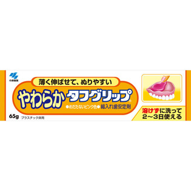

返回列表
产品名称：やわらか タフグリップ

小林製薬 やわらか タフグリップ ６５Ｇ
メーカー 小林製薬
JANコード 4987072066980
商品の特徴
○めだたない肌色
○総入れ歯安定剤
- 成分・分量
- 酢酸ビニル樹脂、アミノアルキルメタクリレートコポリマーRS、無水エタノール、赤色102号アルミニウムレーキ、精製水
- 用法及び用量
（1）入れ歯をよく洗い水分をふきとってください
※入れ歯がぬれていると、よくつきません
（2）巻き上げ器具を使って、適量を絞り出します
※1回量は大豆大が目安ですが、入れ歯と歯ぐきのすき間によって異なりますので、経験に応じてご自身の適量を決めてください
※巻き上げ器具はゆっくりと巻き上げてください
（3）歯ぐきにあたる床全体に押さえてのばします
※指先に水をつけると伸ばしやすくなります
（4）アルコール臭が気になる方は、水又はぬるま湯で軽くすすいでから使用してください
（5）そのままお口にはめ込み、左右均等に食べ物を噛む程度の力で数回かみしめて、歯ぐきの型をとります
※チューブから出したときは半透明の赤色です。使用中にだ液などにより徐々に肌色に変わりますが、品質上問題はありません
（6）入れ歯をいったんはずして、入れ歯からはみ出た部分を取り除き、残った部分をよく押さえてならした後、使用してください。
※使用後はキャップをしっかりしめてください。キャップがゆるいとアルコールが蒸発して固くなります。